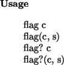
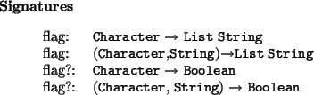
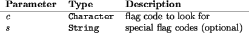
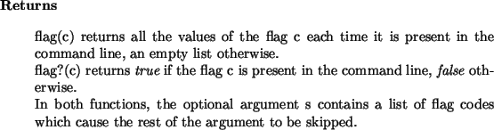

Next: CopyableType
Up: CommandLine
Previous: command
Contents
Index
flag




Example
- If the command line to the program was myprog -lsalli -l gmp -v, then
flag?(char "a") and flag?(char "v") both return true, while
flag?(char "b") and flag?(char "a", "l") both return false.
In addition, flag(char "l") returns the list [``salli'', ``gmp''].
Manuel Bronstein
2000-12-12